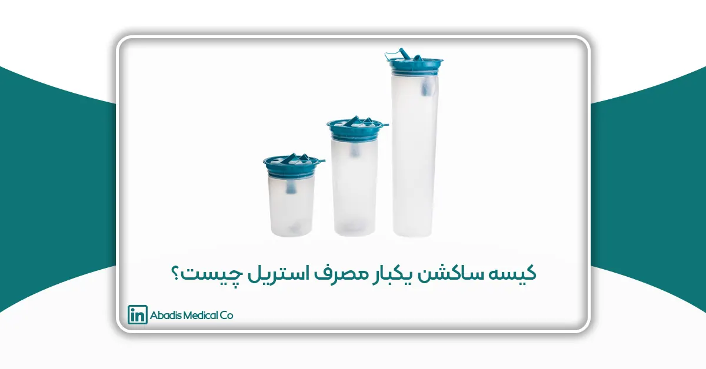

مقدمه
در پزشکی مدرن، به ویژه در جراحیهای تهاجمی و تخصصی، کنترل عفونت و ایمنی بیمار یکی از اصول بنیادین است که مستقیماً با موفقیت عمل جراحی و کاهش عوارض پس از عمل مرتبط است. انتقال میکروبها، باکتریها یا ذرات آلوده در محیط اتاق عمل میتواند منجر به عفونتهای بیمارستانی (Hospital-Acquired Infections) شود که نه تنها سلامت بیمار را تهدید میکند، بلکه هزینههای درمانی و زمان نقاهت را بهطور قابل توجهی افزایش میدهد.
در این زمینه، استفاده از تجهیزات پزشکی یکبار مصرف استریل به عنوان یک راهکار پیشگیرانه بسیار مؤثر شناخته شده است. یکی از این تجهیزات، کیسه ساکشن یکبار مصرف استریل است که به طور ویژه برای جمعآوری و مدیریت مایعات، خون، ترشحات و حتی بافتهای استخراجشده در طول جراحی طراحی شده است. این کیسهها با بهرهگیری از مواد اولیه پزشکی (Medical Grade)، طراحی مکانیکی مقاوم و بستهبندی استریل، ایمنی بیماران و کادر درمان را تضمین میکنند و امکان استفاده مستقیم در اتاق عمل را بدون نیاز به فرآیندهای ضدعفونی مجدد فراهم میآورند.
کیسه ساکشن یکبار مصرف استریل به ویژه در جراحیهای زیبایی مانند لیپوساکشن اهمیت ویژهای دارد، زیرا چربی یا بافت جمعآوریشده ممکن است برای تزریق مجدد به سایر نقاط بدن استفاده شود. در چنین شرایطی، وجود کیسهای کاملاً استریل و قابل اعتماد، نه تنها سلامت بیمار را تضمین میکند بلکه کیفیت و خلوص بافت جمعآوریشده را نیز حفظ مینماید.
با توجه به اهمیت روزافزون استانداردهای بینالمللی در تولید تجهیزات پزشکی، این کیسهها باید مطابق با الزامات ISO 10993، ISO 13485، CE و FDA تولید شوند تا ایمنی و کیفیت آنها تضمین شود. استفاده از کیسه ساکشن استریل یکبار مصرف، به عنوان یک استاندارد جهانی در اتاقهای عمل، نمونهای از همگرایی علم مواد، مهندسی پزشکی و بهداشت بالینی است که با هدف حفظ جان و سلامت بیماران طراحی و به کار گرفته شده است.
کیسه ساکشن یکبار مصرف استریل چیست؟
کیسه ساکشن یکبار مصرف استریل، محفظهای انعطافپذیر و مقاوم است که به دستگاههای ساکشن متصل میشود و وظیفه جمعآوری ترشحات، خون و مایعات بدن را برعهده دارد. ویژگی اصلی این کیسهها، استریل بودن و یکبار مصرف بودن آنهاست. این بدان معناست که در کارخانه تحت شرایط کنترلشده و استریل تولید و بستهبندی میشوند و بدون نیاز به شستوشو یا ضدعفونی اولیه، مستقیماً در محیطهای حساس پزشکی مانند اتاق عمل قابل استفاده هستند.
کاربردهای کیسه ساکشن یکبار مصرف استریل
کیسه ساکشن یکبار مصرف استریل به دلیل ویژگیهای فنی، بهداشتی و استریل بودن، در محیطهای مختلف پزشکی و جراحی کاربرد گستردهای دارد. استفاده از این کیسهها موجب میشود که جمعآوری مایعات، خون، ترشحات و حتی بافتهای استخراجشده با حداقل خطر آلودگی و بالاترین کیفیت انجام شود. در ادامه، کاربردهای کلیدی این کیسهها تفکیک شدهاند:
1. جراحیهای زیبایی و لیپوساکشن
- جمعآوری چربی استخراجشده در عملهای لیپوساکشن و Fat Transfer با حفظ کیفیت و خلوص بافت.
- کاهش ریسک عفونت ناشی از تماس با بافتهای بدن یا مایعات حاوی باکتری.
- امکان استفاده مستقیم محتویات برای تزریق مجدد به نقاط مختلف بدن در شرایط استریل.
- شفافیت کیسهها امکان مشاهده حجم و وضعیت چربی جمعآوریشده را فراهم میکند و تیم جراحی را در مدیریت دقیق فرایند یاری میدهد.
2. جراحی عمومی و ارتوپدی
- جمعآوری خون، مایعات و ترشحات در طول اعمال جراحی مانند برداشتن تومورها یا عملهای مفصلی.
- کاهش حجم مایعات آزاد در محیط جراحی و تسهیل دید جراح.
- جلوگیری از آلودگی محیط اتاق عمل و کاهش خطر تماس پرسنل با مایعات آلوده.
3. جراحی قلب و عروق
- استفاده در عملهای طولانی قلب و عروق برای جمعآوری خون و مایعات اضافی.
- حفاظت از دستگاههای ساکشن و جلوگیری از برگشت محتویات به سیستم مکش.
- کاهش ریسک انتقال میکروبها در محیط حساس و حیاتی قلب و عروق.
4. بخشهای اورژانس و ICU
- جمعآوری ترشحات، خون و مایعات بیماران در شرایط بحرانی و اورژانسی.
- امکان استفاده سریع و مطمئن بدون نیاز به آمادهسازی قبلی.
- کاهش احتمال آلودگی محیط و حفاظت از سلامت کادر درمان در شرایط فشار کاری بالا.
5. کلینیکهای دندانپزشکی و ENT
- جمعآوری بزاق، خون یا ترشحات تنفسی بیماران.
- جلوگیری از انتشار آلودگی میکروبی و افزایش ایمنی بیماران و پرسنل.
- سهولت مدیریت مایعات در اعمال کوتاهمدت و تخصصی.
6. جراحیهای تخصصی با نیاز به ذخیرهسازی محتویات
- مواردی که مایعات یا بافتهای جمعآوریشده ممکن است برای آزمایشهای آزمایشگاهی یا تحلیل سلولی استفاده شوند.
- کیسههای استریل این امکان را فراهم میکنند که نمونهها بدون آلوده شدن و با حفظ کیفیت ذخیره شوند.
7. مزایای کاربردی در تمام حوزهها
- کاهش نیاز به شستوشو و استریل مجدد تجهیزات، صرفهجویی در زمان و هزینهها.
- کاهش ریسک انتقال عفونتهای بیمارستانی (HAI) به بیماران و کادر درمان.
- انطباق با پروتکلهای جهانی ایمنی و بهداشت و الزامات استاندارد ISO و FDA.
- افزایش بهرهوری تیم جراحی و بهبود مدیریت اتاق عمل در عملهای طولانی و حساس
تفاوت کیسه ساکشن استریل با کیسه ساکشن معمولی
|
ویژگی |
کیسه ساکشن معمولی |
کیسه ساکشن یکبار مصرف استریل |
|
وضعیت بهداشتی |
معمولاً غیراستریل یا نیمهاستریل، مناسب محیطهای عمومی |
کاملاً استریل، بدون آلودگی میکروبی، مناسب برای جراحیهای حساس |
|
کاربرد اصلی |
بخشهای عمومی، اورژانس، مراقبتهای کوتاهمدت |
اتاق عمل، جراحیهای طولانی و حساس (مثل لیپوساکشن) |
|
امکان نگهداری محتویات |
اغلب برای دفع سریع طراحی شدهاند |
قابلیت ذخیره موقت چربی یا مایعات استخراجی |
|
قابلیت استفاده مجدد |
یکبار مصرف، بدون نیاز به شستوشو |
یکبار مصرف، بدون نیاز به شستوشو |
|
استانداردها |
الزامات محدود |
الزامات سختگیرانه (ISO، CE، FDA) |
اهمیت ویژه در جراحی لیپوساکشن
لیپوساکشن یکی از پرطرفدارترین جراحیهای زیبایی در جهان است که طی آن چربیهای اضافی بدن مکش و خارج میشوند. در این فرآیند، انتخاب کیسهی ساکشن مناسب اهمیت بسیار بالایی دارد:
1. حفظ کیفیت چربی استخراجی: چربی خارجشده برای تزریق مجدد استفاده میشود و تنها کیسههای استریل قابلیت نگهداری ایمن آن را دارند.
2. پیشگیری از عفونت: استفاده از کیسههای غیراستریل خطر آلودگی و عفونت را افزایش میدهد.
3. حفظ ایمنی تیم جراحی: کیسههای استریل دارای فیلترهای ایمنی هستند که مانع از انتقال آلودگی میشوند.
4. استاندارد جهانی: در پروتکلهای بینالمللی جراحی، استفاده از کیسه ساکشن استریل برای لیپوساکشن الزامی است.
ویژگیهای فنی کیسه ساکشن یکبار مصرف استریل
- مواد اولیه مدیکال گرید (PVC یا PE)
- شفافیت بالا
- مقاومت مکانیکی در برابر پارگی و نشتی
- فیلتر قطع کننده جریان
- حجمهای متنوع (۱ تا ۳ لیتر)
- بستهبندی استریل و یکبار مصرف
استانداردها و تاییدیهها
- ISO 13485: مدیریت کیفیت تجهیزات پزشکی
- ISO 10993: ارزیابی زیستسازگاری مواد
- USP Class VI: استاندارد ایمنی مواد پلیمری
- CE Marking: الزامات ایمنی اتحادیه اروپا
- FDA 21 CFR Part 820: مقررات تجهیزات پزشکی ایالات متحده
مزایای استفاده از کیسه ساکشن استریل یکبار مصرف
- کاهش ریسک انتقال عفونتهای بیمارستانی
- بهبود نتایج جراحی و کوتاه شدن زمان نقاهت
- افزایش ایمنی کادر درمان
- صرفهجویی در زمان و هزینه
- انطباق با پروتکلهای جهانی ایمنی و بهداشت
- امکان استفاده مطمئن در عملهای طولانی و حساس
جمعبندی
کیسه ساکشن یکبار مصرف استریل، بهعنوان یکی از تجهیزات حیاتی اتاق عمل، نقش تعیینکنندهای در ارتقای ایمنی بیمار، کاهش ریسک عفونت و بهبود کیفیت جراحیها ایفا میکند. استفاده از این کیسهها، به ویژه در جراحیهای حساس و طولانی مانند لیپوساکشن، جراحی قلب و عروق و اعمال ارتوپدی پیچیده، باعث میشود که مایعات، خون و بافتهای جمعآوریشده با حداکثر ایمنی و کیفیت مدیریت شوند.
تفاوتهای اساسی کیسه ساکشن استریل با انواع معمولی شامل استریلیته کامل، مواد اولیه مدیکال گرید، سیستم ضد برگشت، شفافیت و مقاومت مکانیکی بالا است. این ویژگیها، امکان استفاده مستقیم در اتاق عمل را بدون نیاز به استریل مجدد فراهم میکنند و ریسک تماس با مایعات آلوده را به حداقل میرسانند.
از منظر استانداردها و مقررات بینالمللی، کیسههای ساکشن استریل مطابق با ISO 10993 (زیستسازگاری مواد)، ISO 13485 (مدیریت کیفیت تجهیزات پزشکی)، CE Marking و FDA 21 CFR Part 820 تولید میشوند. رعایت این استانداردها، تضمینکننده ایمنی بیماران و انطباق با پروتکلهای جهانی است.
از لحاظ کاربردهای بالینی، این کیسهها علاوه بر جراحیهای زیبایی و لیپوساکشن، در جراحیهای عمومی، ارتوپدی، ICU، اورژانس و کلینیکهای تخصصی دندانپزشکی و ENT استفاده میشوند. مزایای بالینی شامل کاهش ریسک عفونت، حفظ کیفیت محتویات جمعآوریشده، سهولت استفاده و آمادهسازی سریع است.
مزایای اقتصادی و مدیریتی نیز قابل توجه است. استفاده از کیسه ساکشن استریل باعث کاهش هزینههای ناشی از استریل مجدد، کاهش زمان آمادهسازی اتاق عمل و افزایش بهرهوری کادر درمان میشود. علاوه بر این، با کاهش احتمال عفونتهای بیمارستانی، هزینههای درمانی پس از عمل کاهش یافته و ایمنی بیمار افزایش مییابد.
در نهایت، کیسه ساکشن یکبار مصرف استریل، نمونهای بارز از همگرایی علم مواد، مهندسی پزشکی و بهداشت بالینی است. با توجه به روندهای نوین مانند کیسههای هوشمند، بیودگرادبل و مقاوم به فشار بالا، آینده این تجهیزات نشاندهنده پیشرفت مداوم در جهت افزایش ایمنی، کارایی و کیفیت خدمات درمانی است.
بنابراین، استفاده از کیسه ساکشن یکبار مصرف استریل نه تنها یک الزام استاندارد در اتاقهای عمل مدرن است، بلکه ابزاری راهبردی برای ارتقای ایمنی بیماران و بهبود فرآیندهای جراحی به شمار میرود و جایگاه خود را به عنوان استاندارد طلایی در مدیریت مایعات و بافتها تثبیت کرده است.
منابع و رفرنسها
1. RAUMEDIC, “The important role of PVC in medical devices and applications,” [Online].
2. European Council of Vinyl Manufacturers (ECVM), “PVC in healthcare,” [Online].
3. Kent Elastomer, “Medical grade PVC tubing benefits and uses,” [Online].
4. ISO 10993: “Biological evaluation of medical devices – Part 1: Evaluation and testing within a risk management process.”
5. ISO 13485: “Medical devices — Quality management systems — Requirements for regulatory purposes.”
6. FDA 21 CFR Part 820: “Quality System Regulation for Medical Devices.”